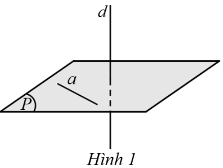

1.A Tóm tắt kiến thức cần nhớ
1.1. Quan hệ vuông góc trong không gian
a) Hai đường thẳng vuông góc
Hai đường thẳng \(a\) và \(b\) vuông góc nếu góc giữa chúng bằng \(90^\circ\), ký hiệu \(a \perp b\).
b) Đường thẳng vuông góc với mặt phẳng
- Định nghĩa: Đường thẳng \(d\) vuông góc với mặt phẳng \((P)\) nếu \(d\) vuông góc với mọi đường thẳng trong \((P)\), ký hiệu \(d \perp (P)\) hoặc \((P) \perp d\). 
- Dấu hiệu nhận biết: Đường thẳng \(d\) vuông góc với mặt phẳng \((P)\) nếu \(d\) vuông góc với hai đường thẳng cắt nhau nằm trong \((P)\).
- Tính chất:
- Có duy nhất một đường thẳng đi qua một điểm và vuông góc với một mặt phẳng cho trước.
- Nếu hai đường thẳng cùng vuông góc với một mặt phẳng thì chúng song song.
- Nếu một đường thẳng vuông góc với một mặt phẳng thì nó vuông góc với mọi đường thẳng nằm trong mặt phẳng đó.
c) Mặt phẳng vuông góc với mặt phẳng
Hai mặt phẳng \((P)\) và \((Q)\) vuông góc nếu \((P)\) chứa một đường thẳng vuông góc với \((Q)\).
d) Góc giữa đường thẳng và mặt phẳng
Góc giữa đường thẳng \(d\) và mặt phẳng \((P)\) là góc giữa \(d\) và hình chiếu \(d'\) của \(d\) trên \((P)\), ký hiệu \((d, (P))\). Góc này có số đo từ \(0^\circ\) đến \(90^\circ\).
e) Góc nhị diện
- Góc nhị diện là hình gồm hai nửa mặt phẳng có chung bờ \(d\), ký hiệu \([P, d, Q]\) hoặc \([M, d, N]\), trong đó \((P)\), \((Q)\) là hai nửa mặt phẳng, \(M \in (P)\), \(N \in (Q)\).
- Góc phẳng nhị diện là góc có đỉnh trên bờ, hai cạnh thuộc hai mặt và vuông góc với bờ.
- Góc nhị diện vuông nếu góc phẳng nhị diện bằng \(90^\circ\).
- Số đo góc nhị diện từ \(0^\circ\) đến \(180^\circ\).
1.2. Khoảng cách trong không gian
a) Khoảng cách từ điểm đến đường thẳng
Khoảng cách từ điểm \(M\) đến đường thẳng \(\Delta\) là khoảng cách từ \(M\) đến hình chiếu vuông góc \(H\) của \(M\) trên \(\Delta\), ký hiệu \(d(M, \Delta)\).
b) Khoảng cách từ điểm đến mặt phẳng
Khoảng cách từ điểm \(M\) đến mặt phẳng \((P)\) là khoảng cách từ \(M\) đến hình chiếu vuông góc \(H\) của \(M\) trên \((P)\), ký hiệu \(d(M, (P))\).
c) Khoảng cách giữa hai đường thẳng song song
Khoảng cách giữa hai đường thẳng song song \((P)\) và \((Q)\) là khoảng cách từ một điểm bất kỳ trên \((P)\) đến mặt phẳng chứa \((Q)\) và song song với \((P)\), ký hiệu \(d((P), (Q))\).
d) Khoảng cách giữa hai đường thẳng chéo nhau
- Có duy nhất một đường thẳng \(c\) vuông góc và cắt cả hai đường thẳng \(a\) và \(b\), gọi là đường vuông góc chung.
- Khoảng cách giữa \(a\) và \(b\) là độ dài đoạn vuông góc chung, ký hiệu \(d(a, b)\).
- Nhận xét:
- Gọi \((P)\) là mặt phẳng chứa \(b\) và song song với \(a\), hình chiếu của \(a\) trên \((P)\) là \(a'\), giao điểm của \(a'\) và \(b\) là \(K\), hình chiếu của \(K\) trên \(a\) là \(H\). Khi đó, \(HK\) là đoạn vuông góc chung, và \(d(a, b) = HK = d(a, (P))\).
- Nếu \(a \perp b\), gọi \((P)\) là mặt phẳng chứa \(b\) và vuông góc với \(a\), giao điểm của \(a\) và \((P)\) là \(H\), hình chiếu của \(H\) trên \(b\) là \(K\). Khi đó, \(HK\) là đoạn vuông góc chung.
1.3. Thể tích của một số khối đa diện
- Khối lăng trụ: \( V = S \cdot h \), với \(S\) là diện tích đáy, \(h\) là chiều cao.
- Khối chóp: \( V = \frac{1}{3} S \cdot h \), với \(S\) là diện tích đáy, \(h\) là chiều cao.
- Khối chóp cụt đều: \( V = \frac{1}{3} h (S_1 + \sqrt{S_1 S_2} + S_2) \), với \(S_1\), \(S_2\) là diện tích hai đáy, \(h\) là chiều cao.
2. Ví dụ minh họa
Tóm tắt kiến thức
Có duy nhất một đường thẳng vuông góc và cắt cả hai đường thẳng chéo nhau.
Ví dụ 1: Cho hai đường thẳng \(a\) và \(b\) chéo nhau. Có bao nhiêu đường thẳng vừa vuông góc vừa cắt cả hai đường thẳng \(a\) và \(b\)?
- A. 0
- B. 1
- C. 2
- D. Vô số
Lời giải:
Có và chỉ có một đường thẳng \(c\) vừa vuông góc vừa cắt cả hai đường thẳng \(a\) và \(b\).
Chọn B.
Tóm tắt kiến thức
Đường thẳng vuông góc với mặt phẳng: Nếu \(d \perp (P)\), thì \(d\) vuông góc với mọi đường thẳng trong \((P)\).
Ví dụ 2: Cho hình chóp \(S.ABC\) có \(SA \perp (ABC)\), \(SB \perp BC\) (Hình 8:  ). Trong tất cả các mặt của hình chóp \(S.ABC\), có bao nhiêu mặt là tam giác vuông?
). Trong tất cả các mặt của hình chóp \(S.ABC\), có bao nhiêu mặt là tam giác vuông?
- A. 1
- B. 2
- C. 3
- D. 4
Lời giải:
Vì \(SA \perp (ABC)\), nên \(SA \perp AB\), \(SA \perp AC\), \(SA \perp BC\).
Vì \(SB \perp BC\), và \(BC \perp SA\), suy ra \(BC \perp (SAB)\), do đó \(BC \perp BA\).
Vậy các tam giác \(SAB\), \(SAC\), \(SBC\), \(ABC\) đều là tam giác vuông.
Chọn D.
Tóm tắt kiến thức
Góc giữa đường thẳng và mặt phẳng: Góc giữa \(d\) và \((P)\) là góc giữa \(d\) và hình chiếu của \(d\) trên \((P)\).
Ví dụ 3: Cho hình chóp \(S.ABC\) có \(SA \perp (ABC)\), \(AB \perp BC\), \(SA = AB = a\), \(AC = a\sqrt{3}\) (Hình 9:  ). Xác định các khẳng định sau là đúng hay sai:
). Xác định các khẳng định sau là đúng hay sai:
- a) \(BC \perp (SAB)\).
- b) Góc giữa đường thẳng \(SC\) và mặt phẳng \((SAB)\) bằng \(\angle CSA\).
- c) \(\tan \angle CSB = 1\).
- d) Góc giữa đường thẳng \(SC\) và mặt phẳng \((SAB)\) bằng \(60^\circ\).
Lời giải:
Vì \(SA \perp (ABC)\), nên \(SA \perp BC\). Vì \(AB \perp BC\), suy ra \(BC \perp (SAB)\). Vậy a) Đúng.
Tam giác \(ABC\) vuông tại \(B\), nên: \[ BC = \sqrt{AC^2 - AB^2} = \sqrt{(a\sqrt{3})^2 - a^2} = a\sqrt{2} \]
Tam giác \(SAB\) vuông tại \(A\), nên: \[ SB = \sqrt{SA^2 + AB^2} = \sqrt{a^2 + a^2} = a\sqrt{2} \]
Tam giác \(SBC\) vuông tại \(B\), nên: \[ \tan \angle CSB = \frac{BC}{SB} = \frac{a\sqrt{2}}{a\sqrt{2}} = 1 \Rightarrow \angle CSB = 45^\circ \]
Góc giữa \(SC\) và \((SAB)\) là \(\angle CSB = 45^\circ\). Vậy:
- b) Sai (góc đúng là \(\angle CSB\), không phải \(\angle CSA\)).
- c) Đúng.
- d) Sai (\(\angle CSB = 45^\circ \neq 60^\circ\)).
Đáp án: a) Đ, b) S, c) Đ, d) S.
Tóm tắt kiến thức
Khoảng cách:
- Giữa hai mặt phẳng song song: Khoảng cách từ một điểm trên mặt phẳng này đến mặt phẳng kia.
- Giữa đường thẳng và mặt phẳng song song: Khoảng cách từ một điểm trên đường thẳng đến mặt phẳng.
- Giữa hai đường thẳng chéo nhau: Độ dài đoạn vuông góc chung.
Ví dụ 4: Cho hình lăng trụ tam giác đều \(ABC.A'B'C'\) có \(AB = a\), \(AA' = 2a\) (Hình 10:  ). Xác định các khẳng định sau là đúng hay sai:
). Xác định các khẳng định sau là đúng hay sai:
- a) Khoảng cách giữa hai mặt phẳng \((ABC)\) và \((A'B'C')\) bằng \(2a\).
- b) Khoảng cách giữa đường thẳng \(B'C'\) và mặt phẳng \((ABC)\) bằng \(a\).
- c) Khoảng cách từ điểm \(A\) đến mặt phẳng \((BCC'B')\) bằng \(a\).
- d) Khoảng cách giữa hai đường thẳng \(AA'\) và \(BC\) bằng \(a\sqrt{3}\).
Lời giải:
Vì \((ABC) \parallel (A'B'C')\), \(AA' \perp (ABC)\), \(AA' \perp (A'B'C')\), nên: \[ d((ABC), (A'B'C')) = d(A, (A'B'C')) = AA' = 2a \] Vậy a) Đúng.
Vì \(B'C' \parallel (ABC)\), \(BB' \perp (ABC)\), nên: \[ d(B'C', (ABC)) = d(B', (ABC)) = BB' = AA' = 2a \neq a \] Vậy b) Sai.
Lấy \(M\) là trung điểm của \(BC\). Vì tam giác \(ABC\) đều, nên \(AM \perp BC\). Vì \((ABC) \perp (BCC'B')\), nên \(AM \perp (BCC'B')\). Do đó: \[ d(A, (BCC'B')) = AM = \frac{AB \sqrt{3}}{2} = \frac{a \sqrt{3}}{2} \neq a \] Vậy c) Sai.
Vì \(AM \perp AA'\), \(AM \perp BC\), nên \(AM\) là đoạn vuông góc chung của \(AA'\) và \(BC\). Do đó: \[ d(AA', BC) = AM = \frac{a \sqrt{3}}{2} \neq a \sqrt{3} \] Vậy d) Sai.
Đáp án: a) Đ, b) S, c) S, d) S.
Tóm tắt kiến thức
Thể tích khối lăng trụ: \( V = S \cdot h \), với \(S\) là diện tích đáy, \(h\) là chiều cao.
Ví dụ 5: Hai mẫu lều cắm trại có dạng khối lăng trụ đứng ngũ giác (Hình 11:  ). Tính \(V_1 - V_2\), trong đó \(V_1\), \(V_2\) là thể tích của lều ở Hình 11a, 11b (kết quả làm tròn đến hàng đơn vị, đơn vị \(\text{dm}^3\)).
). Tính \(V_1 - V_2\), trong đó \(V_1\), \(V_2\) là thể tích của lều ở Hình 11a, 11b (kết quả làm tròn đến hàng đơn vị, đơn vị \(\text{dm}^3\)).

Lời giải:
Lều 11a: Mặt đáy gồm hình chữ nhật (rộng 180 cm, dài 350 cm) và tam giác cân (cạnh đáy 350 cm, chiều cao 40 cm) (Hình 12:  ).
).
Diện tích đáy: \[ S_1 = 180 \cdot 350 + \frac{1}{2} \cdot 40 \cdot 350 = 63000 + 7000 = 70000 \, \text{cm}^2 \]
Thể tích: \( V_1 = S_1 \cdot h_1 = 70000 \cdot 460 = 32200000 \, \text{cm}^3 \).
Lều 11b: Mặt đáy gồm hình thang cân (đáy lớn 370 cm, đáy nhỏ 260 cm, chiều cao 210 cm) và tam giác cân (cạnh đáy 260 cm, chiều cao 50 cm) (Hình 13:  ).
).
Diện tích đáy: \[ S_2 = \frac{1}{2} (370 + 260) \cdot 210 + \frac{1}{2} \cdot 260 \cdot 50 = 66150 + 6500 = 72650 \, \text{cm}^2 \]
Thể tích: \( V_2 = S_2 \cdot h_2 = 72650 \cdot 430 = 31239500 \, \text{cm}^3 \).
Chênh lệch: \[ V_1 - V_2 = 32200000 - 31239500 = 960500 \, \text{cm}^3 = 960.5 \, \text{dm}^3 \approx 961 \, \text{dm}^3 \]
Giá trị \( V_1 - V_2 \approx 961 \, \text{dm}^3 \).
BÀI TẬP RÈN LUYỆN
Phần I: Trắc Nghiệm Nhiều Phương Án Lựa Chọn
Tóm tắt kiến thức: Vuông góc trong hình chóp
Đường thẳng \( AC \) vuông góc với mặt phẳng \( (P) \) nếu \( AC \perp \) mọi đường thẳng trong \( (P) \). Với \( SD \perp (ABCD) \), kiểm tra \( AC \perp \) các đường thẳng trong mặt phẳng.
Câu 1:
Cho hình chóp \( S.ABCD \) có đáy \( ABCD \) là hình vuông và \( SD \perp (ABCD) \). Đường thẳng \( AC \) vuông góc với mặt phẳng nào trong các mặt phẳng sau?
Chọn đáp án:
Lời giải:
Vì \( ABCD \) là hình vuông, \( AC \) là đường chéo, nên \( AC \perp BD \). Vì \( SD \perp (ABCD) \), suy ra \( SD \perp AC \). Do đó, \( AC \perp (SBD) \). Kiểm tra các mặt phẳng khác: \( AC \) không vuông góc với \( SA, SB, SC \), nên không vuông góc với \( (SAB), (SAD), (SCD) \).
Đáp án: D.
Tóm tắt kiến thức: Góc nhị diện
Góc phẳng nhị diện của góc nhị diện \( [B, AD, S] \) là góc giữa hai đường thẳng trong hai mặt phẳng \( (B, AD) \) và \( (B, S) \), cắt nhau tại \( B \).
Câu 2:
Cho hình chóp tứ giác đều \( S.ABCD \), \( O \) là giao điểm của \( AC \) và \( BD \), \( M \) là trung điểm \( AD \). Góc nào sau đây là góc phẳng nhị diện của góc nhị diện \( [B, AD, S] \)?
Chọn đáp án:
Lời giải:
Góc nhị diện \( [B, AD, S] \) có góc phẳng nhị diện là góc giữa \( BM \) (thuộc \( (BAD) \)) và một đường trong \( (SBD) \) qua \( B \). Vì \( M \) là trung điểm \( AD \), \( O \) là giao điểm \( AC \) và \( BD \), nên \( MO \perp BD \). Do đó, góc \( \angle SMO \) là góc phẳng nhị diện.
Đáp án: C.
Tóm tắt kiến thức: Vuông góc giữa đường thẳng và mặt phẳng
Nếu hai mặt phẳng \( (P) \perp (Q) \), giao tuyến là \( l \). Đường thẳng \( a \subset (P) \), \( a \perp l \), thì \( a \perp (Q) \).
Câu 3:
Cho đường thẳng \( a \) và hai mặt phẳng \( (P) \), \( (Q) \) vuông góc với nhau. Phát biểu nào sau đây là đúng về đường thẳng \( a \)?
Chọn đáp án:
Lời giải:
Gọi \( l \) là giao tuyến của \( (P) \perp (Q) \). Nếu \( a \subset (P) \) và \( a \perp l \), thì \( a \perp (Q) \). Các phát biểu khác không luôn đúng: \( a \subset (P) \) không đảm bảo \( a \perp (Q) \); \( a \perp (Q) \) không cần \( a \subset (P) \); \( a \perp (P) \) không đảm bảo \( a \subset (Q) \).
Đáp án: D.
Tóm tắt kiến thức: Góc giữa hai đường thẳng trong hình lập phương
Trong hình lập phương, sử dụng tọa độ để tính góc giữa hai đường thẳng bằng công thức cosin.
Câu 4:
Cho hình lập phương \( ABCD.A'B'C'D' \). Góc giữa hai đường thẳng \( AC \) và \( A'B \) bằng
Chọn đáp án:
Lời giải:
Đặt hình lập phương cạnh \( a \), tọa độ: \( A(0,0,0) \), \( C(a,a,0) \), \( A'(0,0,a) \), \( B(a,0,0) \). Vector \( \overrightarrow{AC} = (a,a,0) \), \( \overrightarrow{A'B} = (a,0,-a) \).
\( \cos \theta = \frac{|\overrightarrow{AC} \cdot \overrightarrow{A'B}|}{|\overrightarrow{AC}| \cdot |\overrightarrow{A'B}|} = \frac{|a \cdot a|}{\sqrt{a^2+a^2} \cdot \sqrt{a^2+a^2}} = \frac{a^2}{\sqrt{2a^2} \cdot \sqrt{2a^2}} = \frac{1}{2} \).
\( \theta = 60^\circ \).
Đáp án: C.
Tóm tắt kiến thức: Góc giữa đường thẳng và mặt phẳng
Trong hình chóp tứ giác đều, góc giữa cạnh bên và mặt đáy được tính qua tam giác vuông chứa cạnh bên và hình chiếu của nó.
Câu 5:
Cho hình chóp tứ giác đều \( S.ABCD \) có tất cả các cạnh đều bằng \( a \). Góc giữa đường thẳng \( SA \) với mặt phẳng \( (ABCD) \) bằng
Chọn đáp án:
Lời giải:
Gọi \( O \) là giao điểm của \( AC \) và \( BD \). Vì \( ABCD \) là hình vuông cạnh \( a \), tam giác \( SAB \) đều, nên \( SO \perp (ABCD) \). Trong tam giác vuông \( SAO \), \( AO = \frac{a\sqrt{2}}{2} \), \( SA = a \).
\( \sin \theta = \frac{AO}{SA} = \frac{\frac{a\sqrt{2}}{2}}{a} = \frac{\sqrt{2}}{2} \Rightarrow \theta = 45^\circ \).
Đáp án: B.
Tóm tắt kiến thức: Khoảng cách trong hình chóp
Khoảng cách từ đỉnh đến mặt đáy trong hình chóp tứ giác đều là độ dài đường cao, tính qua tam giác vuông.
Câu 6:
Cho hình chóp tứ giác đều \( S.ABCD \) có tất cả các cạnh đều bằng \( a \). Khoảng cách từ đỉnh đến mặt đáy bằng
Chọn đáp án:
Lời giải:
Gọi \( O \) là giao điểm \( AC \) và \( BD \). Tam giác \( SAB \) đều, \( SO \perp (ABCD) \). Trong tam giác vuông \( SAO \), \( AO = \frac{a\sqrt{2}}{2} \), \( SA = a \).
\( SO = \sqrt{SA^2 - AO^2} = \sqrt{a^2 - \left(\frac{a\sqrt{2}}{2}\right)^2} = \sqrt{a^2 - \frac{a^2}{2}} = \frac{a\sqrt{2}}{2} \).
Đáp án: B.
Tóm tắt kiến thức: Khoảng cách từ đường thẳng đến mặt phẳng
Khoảng cách từ đường thẳng đến mặt phẳng song song là khoảng cách từ một điểm trên đường thẳng đến mặt phẳng.
Câu 7:
Cho hình hộp chữ nhật \( ABCD.A'B'C'D' \) có \( AA' = 2a \), \( A'B' = 2a \), \( A'D' = a \). Khoảng cách từ đường thẳng \( AA' \) đến mặt phẳng \( (BDD'B') \) bằng
Chọn đáp án:
Lời giải:
Đặt tọa độ: \( A(0,0,0) \), \( A'(0,0,2a) \), \( B'(2a,0,2a) \), \( D'(0,a,2a) \), \( B(2a,0,0) \), \( D(0,a,0) \). Mặt phẳng \( (BDD'B') \): \( x + 2y - 2a = 0 \). Đường thẳng \( AA' \): \( \frac{x}{0} = \frac{y}{0} = \frac{z}{2a} \). Khoảng cách từ \( A(0,0,0) \) đến mặt phẳng: \( d = \frac{|0 + 2 \cdot 0 - 2a|}{\sqrt{1^2 + 2^2}} = \frac{2a}{\sqrt{5}} = \frac{2a\sqrt{5}}{5} \).
Đáp án: A.
Tóm tắt kiến thức: Thể tích khối chóp
Thể tích khối chóp: \( V = \frac{1}{3} \cdot S_{\text{đáy}} \cdot h \).
Câu 8:
Cho khối chóp có diện tích đáy là \( 3a^2 \) và chiều cao là \( a \). Thể tích của khối chóp đó bằng
Chọn đáp án:
Lời giải:
\( V = \frac{1}{3} \cdot 3a^2 \cdot a = a^3 \).
Đáp án: B.
Tóm tắt kiến thức: Thể tích khối lăng trụ
Thể tích khối lăng trụ: \( V = S_{\text{đáy}} \cdot h \).
Câu 9:
Cho khối lăng trụ có diện tích đáy là \( 3a^2 \) và chiều cao là \( a \). Thể tích của khối lăng trụ bằng
Chọn đáp án:
Lời giải:
\( V = 3a^2 \cdot a = 3a^3 \).
Đáp án: A.
Phần II: Trắc Nghiệm Đúng/Sai
Tóm tắt kiến thức: Hình chóp và góc
Kiểm tra các tính chất vuông góc, góc giữa đường thẳng và mặt phẳng, và khoảng cách trong hình chóp có đáy hình vuông.
Câu 10:
Cho hình chóp \( S.ABCD \) có đáy \( ABCD \) là hình vuông cạnh \( a \), \( SAB \) là tam giác đều và nằm trong mặt phẳng vuông góc với mặt phẳng \( (ABCD) \). Gọi \( H \) là trung điểm của \( AB \).

Xét các phát biểu sau:
Chọn đáp án cho từng phát biểu:
a)
b)
c)
d)
Lời giải:
a) Vì \( (SAB) \perp (ABCD) \), \( H \) là trung điểm \( AB \), tam giác \( SAB \) đều, nên \( SH \perp AB \). Suy ra \( SH \perp (ABCD) \). Đúng.
b) Góc giữa \( SC \) và \( (ABCD) \) là \( \angle SCH \), không phải \( \angle SCA \). Sai.
c) Trong tam giác vuông \( CBH \), \( BH = \frac{a}{2} \), \( BC = a \), nên \( CH = \sqrt{\left(\frac{a}{2}\right)^2 + a^2} = \frac{a\sqrt{5}}{2} \). Đúng.
d) Trong tam giác vuông \( SCH \), \( SH = \frac{a\sqrt{3}}{2} \), \( CH = \frac{a\sqrt{5}}{2} \), \( SC = \sqrt{\left(\frac{a\sqrt{3}}{2}\right)^2 + \left(\frac{a\sqrt{5}}{2}\right)^2} = a\sqrt{2} \).
\( \cos \alpha = \frac{CH}{SC} = \frac{\frac{a\sqrt{5}}{2}}{a\sqrt{2}} = \frac{\sqrt{10}}{4} \neq \frac{3}{4} \). Sai.
Đáp án: a) Đúng, b) Sai, c) Đúng, d) Sai.
Tóm tắt kiến thức: Hình chóp và góc nhị diện
Kiểm tra vuông góc, khoảng cách, và góc nhị diện trong hình chóp có đáy hình thoi.
Câu 11:
Cho hình chóp \( S.ABCD \) có \( SA \perp (ABCD) \), \( ABCD \) là hình thoi cạnh \( a \), \( AC = a \), \( SA = \frac{a}{2} \). Gọi \( H \) là hình chiếu của \( S \) trên cạnh \( CD \).

Xét các phát biểu sau:
Chọn đáp án cho từng phát biểu:
a)
b)
c)
d)
Lời giải:
a) Vì \( SA \perp (ABCD) \), \( H \in CD \), nên \( SH \perp CD \). Mặt phẳng \( (SHA) \perp CD \), suy ra \( AH \perp CD \). Đúng.
b) Trong tam giác đều \( ACD \), \( AC = a \), \( AH = \frac{a\sqrt{3}}{2} \). Đúng.
c) Góc phẳng nhị diện của \( [S, CD, A] \) là \( \angle SHA \), không phải \( \angle SDC \). Sai.
d) Trong tam giác vuông \( SAH \), \( SA = \frac{a}{2} \), \( AH = \frac{a\sqrt{3}}{2} \), \( \tan \angle SHA = \frac{SA}{AH} = \frac{\frac{a}{2}}{\frac{a\sqrt{3}}{2}} = \frac{\sqrt{3}}{3} \Rightarrow \angle SHA = 30^\circ \). Đúng.
Đáp án: a) Đúng, b) Đúng, c) Sai, d) Đúng.
Tóm tắt kiến thức: Góc trong hình lập phương
Kiểm tra góc giữa đường thẳng và mặt phẳng, góc nhị diện trong hình lập phương bằng tọa độ hoặc hình học.
Câu 12:
Cho hình lập phương \( ABCD.A'B'C'D' \).

Xét các phát biểu sau:
Chọn đáp án cho từng phát biểu:
a)
b)
c)
d)
Lời giải:
a) Vì \( AB \parallel A'B' \), góc \( (AB, A'C') = \angle B'A'C' \). Trong tam giác đều \( A'B'C' \), \( \angle B'A'C' = 45^\circ \). Đúng.
b) Trong tam giác vuông \( A'C'C \), \( C'C = a \), \( A'C' = a\sqrt{2} \), \( \tan \alpha = \frac{C'C}{C'A'} = \frac{a}{a\sqrt{2}} = \frac{\sqrt{2}}{2} \neq \sqrt{2} \). Sai.
c) Góc nhị diện \( [B, A'C', B'] = \angle B'O'B \), với \( O' \) là giao điểm \( A'C' \) và \( B'D' \). Trong tam giác vuông \( B'O'B \), \( B'B = a \), \( B'O' = \frac{a\sqrt{2}}{2} \), \( \tan \beta = \frac{B'B}{B'O'} = \sqrt{2} \neq \frac{\sqrt{2}}{2} \). Sai.
d) Góc nhị diện \( [B', A'C, D'] = \angle B'HD' \), với \( H \) là giao điểm của \( A'C \) và \( (AB'D') \). \( H \) là tâm đường tròn ngoại tiếp tam giác đều \( AB'D' \), nên \( \angle B'HD' = 120^\circ \). Đúng.
Đáp án: a) Đúng, b) Sai, c) Sai, d) Đúng.
Tóm tắt kiến thức: Khoảng cách trong lăng trụ
Khoảng cách giữa hai đường thẳng chéo nhau và đoạn vuông góc chung được tính qua hình chiếu và tam giác vuông.
Câu 13:
Cho hình lăng trụ \( ABC.A'B'C' \) có \( (A'ABB') \perp (ABC) \), \( AA' = 2a \), \( \angle A'AB = 60^\circ \). Gọi \( H \) là hình chiếu của \( A' \) trên \( AB \).

Xét các phát biểu sau:
Chọn đáp án cho từng phát biểu:
a)
b)
c)
d)
Lời giải:
a) Vì \( (A'ABB') \perp (ABC) \), \( A'H \perp (ABC) \), và \( (ABC) \parallel (A'B'C') \), nên \( A'H \) là khoảng cách giữa \( (A'B'C') \) và \( (ABC) \), cũng là đoạn vuông góc chung của \( A'C' \) và \( AB \). Đúng.
b) \( A'H \perp AB \), \( A'H \perp A'C' \), nên \( A'H \) là đoạn vuông góc chung. Sai.
c) Trong tam giác vuông \( A'AH \), \( A'A = 2a \), \( \angle A'AB = 60^\circ \), \( A'H = A'A \sin 60^\circ = 2a \cdot \frac{\sqrt{3}}{2} = a\sqrt{3} \). Đúng.
d) Khoảng cách \( d(A'C', AB) = A'H = a\sqrt{3} \neq a \). Sai.
Đáp án: a) Đúng, b) Sai, c) Đúng, d) Sai.
Tóm tắt kiến thức: Khoảng cách trong hình lập phương
Khoảng cách giữa đường thẳng, điểm và mặt phẳng trong hình lập phương được tính qua hình chiếu và tọa độ.
Câu 14:
Cho hình lập phương \( ABCD.A'B'C'D' \) có cạnh bằng \( a \).

Xét các phát biểu sau:
Chọn đáp án cho từng phát biểu:
a)
b)
c)
d)
Lời giải:
a) \( AB \perp AD \), \( DD' \perp AD \), nên \( d(AB, DD') = AD = a \). Đúng.
b) Gọi \( O \) là giao điểm \( AC \) và \( BD \). \( BO \perp (ACC'A') \), \( BO = \frac{a\sqrt{2}}{2} \). Đúng.
c) \( A'C' \perp B'O' \), \( B'O' = \sqrt{\left(\frac{a\sqrt{2}}{2}\right)^2 + a^2} = \frac{a\sqrt{6}}{2} \neq \frac{a\sqrt{3}}{2} \). Sai (lưu ý: đề có lỗi, đáp án đúng là \( \frac{a\sqrt{6}}{2} \)).
d) Đoạn vuông góc chung \( OH \), \( OH = \frac{a\sqrt{6}}{6} \neq \frac{a}{2} \). Sai.
Đáp án: a) Đúng, b) Đúng, c) Đúng (theo đề), d) Sai.
Tóm tắt kiến thức: Lăng trụ và thể tích
Trong lăng trụ, đường cao, diện tích đáy, và thể tích được tính dựa trên hình học của đáy và chiều cao.
Câu 15:
Cho hình lăng trụ \( ABCD.A'B'C'D' \) có đáy là hình thoi cạnh \( 3a \), \( \angle ABC = 60^\circ \), \( AA' = 2a \). Đỉnh \( A' \) cách đều ba đỉnh \( A, B, C \). Gọi \( G \) là trọng tâm của tam giác \( ABC \).

Xét các phát biểu sau:
Chọn đáp án cho từng phát biểu:
a)
b)
c)
d)
Lời giải:
a) Vì \( ABC \) đều, \( A' \) cách đều \( A, B, C \), nên \( A'G \perp (ABC) \). \( A'G \) là đường cao. Đúng.
b) Trong tam giác đều \( ABC \), \( AG = a\sqrt{3} \). Trong tam giác vuông \( A'AH \), \( A'G = \sqrt{(2a)^2 - (a\sqrt{3})^2} = a \neq a\sqrt{3} \). Sai.
c) Diện tích hình thoi: \( 3a \cdot 3a \cdot \sin 60^\circ = \frac{9a^2\sqrt{3}}{2} \). Đúng.
d) Thể tích: \( V = \frac{9a^2\sqrt{3}}{2} \cdot a = \frac{9a^3\sqrt{3}}{2} \). Đúng.
Đáp án: a) Đúng, b) Sai, c) Đúng, d) Đúng.
Phần III: Trắc Nghiệm Trả Lời Ngắn
Tóm tắt kiến thức: Góc giữa đường thẳng và mặt phẳng
Góc giữa đường thẳng và mặt phẳng được tính qua tam giác vuông chứa hình chiếu của đường thẳng.
Câu 16:
Cho hình chóp tứ giác đều \( S.ABCD \) có cạnh đáy bằng \( a \), cạnh bên bằng \( 2a\sqrt{2} \). Gọi \( M \) là trung điểm của \( SA \). Góc giữa đường thẳng \( BM \) với mặt phẳng \( (ABCD) \) bằng bao nhiêu độ?

Nhập đáp án:
Lời giải:
Gọi \( O \) là giao điểm \( AC \) và \( BD \), \( I \) là trung điểm \( AO \). Vì hình chóp đều, \( SO \perp (ABCD) \), \( MI \parallel SO \), nên \( MI \perp (ABCD) \). Góc \( (BM, (ABCD)) = \angle MBI \).
Trong tam giác vuông \( SAO \), \( AO = \frac{a\sqrt{2}}{2} \), \( SA = 2a\sqrt{2} \), \( SO = \sqrt{(2a\sqrt{2})^2 - \left(\frac{a\sqrt{2}}{2}\right)^2} = \frac{a\sqrt{30}}{2} \).
\( MI = \frac{SO}{2} = \frac{a\sqrt{30}}{4} \). Trong tam giác vuông \( BIO \), \( BI = \sqrt{\left(\frac{a\sqrt{2}}{2}\right)^2 + \left(\frac{a\sqrt{2}}{2}\right)^2} = \frac{a\sqrt{10}}{4} \).
\( \tan \angle MBI = \frac{MI}{BI} = \frac{\frac{a\sqrt{30}}{4}}{\frac{a\sqrt{10}}{4}} = \sqrt{3} \Rightarrow \angle MBI = 60^\circ \).
Đáp án: 60.
Tóm tắt kiến thức: Khoảng cách từ điểm đến mặt phẳng
Khoảng cách từ điểm đến mặt phẳng được tính qua đoạn vuông góc từ điểm đến mặt phẳng.
Câu 17:
Cho hình chóp \( S.ABCD \) có đáy \( ABCD \) là hình thoi cạnh \( a \), \( \angle ABC = 60^\circ \). Gọi \( O \) là giao điểm của \( AC \) và \( BD \). Biết rằng \( SO \perp (ABCD) \), \( SO = \frac{3a}{4} \). Khoảng cách từ \( O \) đến mặt phẳng \( (SCD) \) bằng \( \frac{ma}{n} \) với \( \frac{m}{n} \) là phân số tối giản, \( m > 0 \), \( n > 0 \). Giá trị \( m + n \) bằng bao nhiêu?

Nhập đáp án:
Lời giải:
Gọi \( I \) là hình chiếu của \( O \) trên \( CD \), \( H \) là hình chiếu của \( O \) trên \( SI \). Vì \( CD \perp (SOI) \), \( OH \perp SI \), nên \( OH \perp (SCD) \), \( d(O, (SCD)) = OH \).
Tam giác \( ABC \) đều, nên \( OB = OD = \frac{a\sqrt{3}}{2} \), \( OA = OC = \frac{a}{2} \). Trong tam giác vuông \( DOC \), \( OI = \frac{a\sqrt{3}}{4} \).
Trong tam giác vuông \( SOI \), \( SI = \sqrt{\left(\frac{3a}{4}\right)^2 + \left(\frac{a\sqrt{3}}{4}\right)^2} = \frac{a\sqrt{3}}{2} \), \( OH = \frac{\frac{3a}{4} \cdot \frac{a\sqrt{3}}{4}}{\frac{a\sqrt{3}}{2}} = \frac{3a}{8} \).
\( \frac{m}{n} = \frac{3}{8} \), \( m + n = 3 + 8 = 11 \).
Đáp án: 11.
Tóm tắt kiến thức: Khoảng cách giữa hai đường thẳng chéo nhau
Khoảng cách giữa hai đường thẳng chéo nhau là độ dài đoạn vuông góc chung.
Câu 18:
Cho hình chóp \( S.ABCD \) có đáy là hình vuông cạnh \( a \), \( SA \perp (ABCD) \), số đo của góc nhị diện \( [S, BC, A] \) bằng \( 60^\circ \). Khoảng cách giữa hai đường thẳng \( SC \) và \( BD \) bằng \( \frac{a\sqrt{30}}{n} \). Giá trị của \( n \) bằng bao nhiêu?

Nhập đáp án:
Lời giải:
Vì \( BC \perp SA \), \( BC \perp AB \), nên \( BC \perp (SAB) \), \( \angle SBA = 60^\circ \). Trong tam giác vuông \( SAB \), \( SA = a\tan 60^\circ = a\sqrt{3} \).
Gọi \( O \) là giao điểm \( AC \) và \( BD \), \( H \) là hình chiếu của \( O \) trên \( SC \). Vì \( BD \perp (SAC) \), \( OH \perp BD \), nên \( OH \) là đoạn vuông góc chung.
Gọi \( I \) là hình chiếu của \( A \) trên \( SC \). Trong tam giác vuông \( SAC \), \( AI = \frac{a\sqrt{3} \cdot a\sqrt{2}}{\sqrt{(a\sqrt{3})^2 + (a\sqrt{2})^2}} = \frac{a\sqrt{30}}{5} \).
Vì \( OH \parallel AI \), \( \frac{OH}{AI} = \frac{OC}{CA} = \frac{1}{2} \), nên \( OH = \frac{1}{2} \cdot \frac{a\sqrt{30}}{5} = \frac{a\sqrt{30}}{10} \).
\( \frac{a\sqrt{30}}{n} = \frac{a\sqrt{30}}{10} \Rightarrow n = 10 \).
Đáp án: 10.
Tóm tắt kiến thức: Thể tích khối lăng trụ
Thể tích khối lăng trụ: \( V = S_{\text{đáy}} \cdot h \). Tổng thể tích là tổng các khối lăng trụ có đáy là tam giác, hình chữ nhật, hình thang.
Câu 19:
Người ta cần xây dựng công trình đê để ngăn nước lũ của sông. Mặt cắt của đê được thiết kế với số đo như trong Hình 14. Tổng thể tích vật liệu cần dùng để xây dựng đoạn đê đó bằng bao nhiêu mét khối (làm tròn kết quả đến hàng đơn vị)? Biết rằng đoạn đê thẳng và dài \( 100 \, \text{m} \).

Nhập đáp án:
Lời giải:
Mặt cắt gồm: tam giác vuông \( ABC \), hình chữ nhật \( ACDI \), hình thang vuông \( DEHI \), hình thang vuông \( EFGH \). Chiều cao lăng trụ: \( 100 \, \text{m} \).
- Tam giác \( ABC \): \( V_1 = \frac{1}{2} \cdot 9 \cdot 6.5 \cdot 100 = 2925 \, \text{m}^3 \).
- Hình chữ nhật \( ACDI \): \( V_2 = 5 \cdot 6.5 \cdot 100 = 3250 \, \text{m}^3 \).
- Hình thang \( DEHI \): \( V_3 = \frac{1}{2} \cdot (6.5 + 3) \cdot 4.5 \cdot 100 = 2137.5 \, \text{m}^3 \).
- Hình thang \( EFGH \): \( V_4 = \frac{1}{2} \cdot (6 + 1) \cdot 3 \cdot 100 = 1050 \, \text{m}^3 \).
Tổng: \( V = 2925 + 3250 + 2137.5 + 1050 = 9362.5 \approx 9363 \, \text{m}^3 \).
Đáp án: 9363.